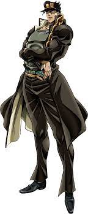
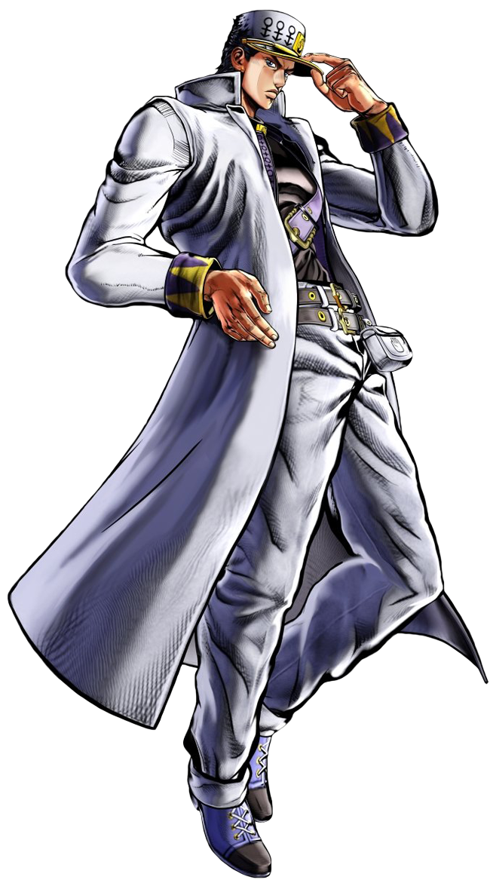
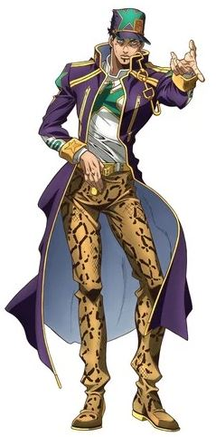

Jotaro Kujo (空 条 承太郎 Kujō Jotaro) É o protagonista de Stardust Crusaders, a Parte 3 do anime e tem aparições nas Partes 4-6. Jotaro é o terceiro Jojo e é o mais famoso da série.
Jotaro é o personagem principal de Stardust Crusaders, aparece em destaque em Diamond is Unbreakable, numa pequena cena em Vento Aureo e novamente em um papel fundamental em Stone Ocean.
Sério, estoico e inteligente, Jotaro possui grande poder e estabilidade aos seus aliados.
"Ele era um menino tão bom… e agora eu não sei o que está acontecendo com ele!" afirma sua mãe Holly Joestar. A pedido da mãe de Jotaro, Joseph vai a prisão onde Jotaro estava preso com Mohammed Avdol para ajudá-lo a se livrar do espírito. Uma breve luta acontece entre os dois, porém termina com Avdol libertando-o da prisão. Saindo da prisão, seu avô e Avdol lhe explicam que o espírito, na verdade, é um "stand". Após isso Jotaro manifesta seu stand e Avdol o chama de "Star Platinum", e todos se impressionam com sua velocidade e força descomunal. Voltando para casa, a mãe de Jotaro cai enferma, devido a um stand que começou a se manifestar em seu corpo (por não saber controlar um stand e não saber o que é um stand exatamente, Holly foi consumida por este poder). Jotaro e seu avô percebem que muitas pessoas estão manifestando stands devido a um antigo inimigo da família Joestar: Dio Brando; que ressurgiu com um plano de dominar o mundo com seu misterioso stand chamado "The World (世界ザ・ワールド, Za Wārudo)". Então Jotaro parte em uma missão para derrotar Dio e salvar a sua mãe.
“Mal é aquele que usa e despreza os fracos, principalmente as mulheres! E foi exatamente isso que você fez, não foi ?! Você deve pensar que Stand permite que você evite leis e consequências, não é...Nesse caso, eu mesmo irei te julgar !! ” —Jotaro Kujo, prestes a derrotar Kakyoin, No dia seguinte, Jotaro caminhou para a Escola, constantemente sendo paquerado por suas muitas colegas de classe. Enquanto descia alguns degraus, a perna de Jotaro foi cortada, fazendo-o voar para o ar. Depois de se segurar com alguns galhos, Jotaro encontrou um aluno transferido, Noriaki Kakyoin, que lhe deu um lenço para limpar seu ferimento. No escritório das enfermeiras da escola, Jotaro abriu o lenço de Kakyoin, que revelou que Kakyoin o mataria. A enfermeira então começou a enlouquecer, tentando esfaquear Jotaro com uma caneta. Kakyoin então apareceu, dizendo a Jotaro que a enfermeira estava possuída por seu Stand, Hierophant Green.Depois de libertar a enfermeira puxando Hierophant Green de sua boca, Jotaro foi forçado a receber o ataque característico de Kakyoin, Emerald Splash. Jotaro sobreviveu ao ataque e, após proclamar que Kakyoin era mau por manipular os fracos, foi capaz de desviar o próximo Emerald Splash, segurar Kakyoin e espancá-lo impiedosamente.Jotaro trouxe o inconsciente Kakyoin para a casa de Kujo para obter informações sobre DIO. Lá, Joseph disse a Jotaro que Kakyoin estava sendo controlado por uma semente de carne de DIO. O botão fez com que Kakyoin se tornasse leal a DIO e também o mataria em alguns dias, uma operação para removê-lo só danificaria seu cérebro. Usando os movimentos precisos das mãos de seu Stand, Jotaro começou a remover o botão de carne de Kakyoin. Apesar da carne atacá-lo, a remoção foi bem-sucedida, permitindo que Kakyoin voltasse a si. No dia seguinte, Jotaro descobriu que sua mãe havia ganhado a habilidade Stand devido à influência de DIO. Mas devido ao fato de Holy ter uma personalidade muito mais gentil, ela não conseguia controlar sua posição. Avdol então estimou que ela morreria em 50 dias e que a única maneira de curá-la seria matando DIO. Graças ao seu Stand ter conseguido desenhar uma mosca We-We de Aswan de sua foto de DIO, Jotaro pôde confirmar que DIO estava na região de Cairo já que a mosca era conhecida por viver apenas naquela área. Sabendo a localização do DIO, Jotaro, Joseph, Avdol e Kakyoin, que tinham uma dívida com Jotaro por salvar sua vida, começaram sua jornada para o Egito . Avdol então deu um nome a Jotaro's Stand, Star Platinum.
Chegando em Bomba do Hemetério, o grupo discutiu sua situação durante uma refeição. Eles logo conheceram um francês chamado Jean Pierre Polnareff, que rapidamente se revelou um dos homens de Dio. No Tiger Balm Garden, Avdol enfrentou o stand do Polnareff, Silver Chariot. Depois de derrotá-lo, Avdol reconheceu os modos cavalheirescos de Polnareff e optou por não matá-lo. Jotaro então removeu rapidamente a semente de carne de Polnareff, assim como fez com Kakyoin. Enquanto esperava pelo próximo meio de transporte em Suape, Polnareff concordou em se juntar ao grupo de Jotaro e contou a eles o motivo original para se aliar a Dio. A irmã de Polnareff foi morta por um homem com as duas mãos direitas e ele chegou à conclusão de que o assassino era um dos homens de Dio.
Enquanto estava no navio, Jotaro salvou a vida de uma criança que caiu no mar. A criança, que Jotaro rapidamente percebeu ser uma menina, havia se escondido a bordo antes. Enquanto nadavam de volta para o navio, Jotaro e a garota quase foram atacados por uma criatura na água, que acabou por ser um suporte subaquático. De volta a bordo, Avdol suspeitou que a garota fosse a usuária do Stand. No entanto, Jotaro suspeitou corretamente que o usuário do Stand era o capitão do navio, Tennille, depois de enganá-lo para que ele admitisse ser um usuário do Stand. Tennille, que admitiu ser apenas um impostor do verdadeiro Capitão Tennille, então usou seu Stand, Dark Blue Moon, para sequestrar a Garota em Fuga. Jotaro foi capaz de socar Tennille rapidamente e resgatar a Garota em Fuga, enquanto Tennille fugiu para a água. Enquanto Jotaro puxava a Garota em Fuga de volta para cima, ele foi puxado para o oceano por Tennille. Debaixo d'água, Tennille cobriu Star Platinum com cracas, sugando a força de Jotaro. Dark Blue Moon então causou o aparecimento de um redemoinho que sugou Jotaro. Jotaro foi capaz de concentrar toda a sua força nos dedos da Star Platinum, que então cortou parte da cabeça de Dark Blue Moon, matando Tennille. Logo depois, o navio começou a explodir, Tennille tendo plantado bombas no navio antes. Depois de algum tempo no barco salva-vidas, Jotaro e os outros encontraram outro navio. Enquanto todos olhavam para o navio, eles descobriram que o navio estava vazio, com exceção de um orangotango. A situação provou ser perigosa quando um dos tripulantes de Tennille foi morto por um dos ganchos do navio. Jotaro e os outros vasculharam o navio em busca de um suporte ou de seu uso, mas não encontraram nada. Enquanto procurava, Jotaro encontrou o orangotango, Forever, quase atacando a Garota em Fuga. Jotaro lutou pela Forever e percebeu que era o usuário do Stand. Como Jotaro continuou sua luta, Forever começou a usar objetos de toda a nave para atacá-lo, além de ser capaz de absorver nas paredes. Quando Forever estava a uma distância segura, objetos do navio começaram a estrangular Jotaro e capturar Joseph e os outros. Rapidamente se tornou aparente que todo o navio era Forever's Stand, Strength. Jotaro foi capaz de escapar dos objetos irritando Forever. Usando um de seus alfinetes de escola e os movimentos precisos dos dedos da Star Platinum, Jotaro foi capaz de subjugar Forever. Para sempre então se rendeu, mostrando a Jotaro sua barriga, mas Jotaro não o perdoou e tentou espancá-lo sem sentido. Com Forever derrotado (ou possivelmente morto), Força começou a se desintegrar lentamente. Jotaro e os outros voltaram ao seu barco salva-vidas e foram capazes de chegar a Cingapura.
Com os corpos cansados pela experiência recente, o grupo decidiu ficar um dia em Cingapura. Enquanto viajava por Cingapura com Kakyoin e a Garota em Fuga, Jotaro viu Kakyoin quase matar um ladrãozinho. Com a personalidade de Kakyoin bem diferente, Jotaro imediatamente ficou desconfiado. Depois de quase ser empurrado para baixo de um grande edifício por Kakyoin, Jotaro o socou, revelando que Kakyoin era um impostor. O falso Kakyoin então se revelou ser Rubber Soul, um usuário de Stand que poderia usar seu Stand parecido com uma gosma, Yellow Temperance, para se transformar em qualquer forma ou ser.Jotaro começou a lutar com ele, apenas para que Yellow Temperance o jogasse para fora do teleférico em que estavam. Enquanto Jotaro conseguia se salvar, ele percebeu que um pedaço de Yellow Temperance havia se aderido a ele, lentamente tentando comer sua carne. Depois de ver que o fogo e o gelo não funcionariam para pará-lo, Jotaro lutou com Rubber Soul novamente. Rubber Soul tentou cobrir Jotaro completamente em Yellow Temperance, mas com ambos agora emaranhados, Jotaro foi capaz de jogar a si mesmo e Rubber Soul na água. Já que Rubber Soul teve que descobrir Yellow Temperance de seu rosto para respirar, Jotaro aproveitou a oportunidade para atingir Rubber Soul.Rubber Soul implorou por sua vida e contou a Jotaro sobre o assassino da irmã de Polnareff, J. Geil, cuja habilidade envolvia espelhos. Rubber Soul então tentou um ataque final em Jotaro usando Yellow Temperance para puxar Jotaro em um cano de água. Usando o punho da Star Platinum para tampar o cano de água, a pressão da água fez com que Rubber Soul voasse para a água. Rubber Soul tentou dar a Jotaro outro apelo de perdão, mas Jotaro deu-lhe outra saraivada de ataques. Jotaro mais tarde se juntou ao grupo, incluindo o verdadeiro Kakyoin, a fim de embarcar em um trem para seu próximo destino, a Índia. Sem o conhecimento de Jotaro, a Garota em Fuga, que havia desenvolvido uma paixão por Jotaro, os estava seguindo de perto.
Chegando em Calcutá, Jotaro e os outros encontraram rapidamente a população local até finalmente irem a um café. Lá, Polnareff encontrou um Stand que usava espelhos, o que significa que o usuário que matou sua irmã estava em Calcutá. Decidindo fazer a batalha em suas próprias mãos, Polnareff partiu para lutar sozinho contra J. Geil. Avdol e Kakyoin mais tarde se juntaram a Polnareff em sua luta. Mais tarde, Jotaro e Joseph encontraram Avdol ferido, tendo sido quase baleado na cabeça pelo parceiro de J. Geil, Hol Horse, com seu Stand, Emperor, que assume a forma de uma arma. Eles conseguiram tratar seus ferimentos e, para que Avdol pudesse se recuperar totalmente, ele decidiu fingir sua morte. Depois de levar Avdol para um local seguro, Jotaro e Joseph conseguiram encontrar Kakyoin e Polnareff, que foram capazes de matar J. Geil. No entanto, eles não conseguiram impedir Hol Horse de fugir. Quando eles se aproximaram da fronteira, o grupo mais uma vez encontrou a Garota em Fuga. Depois de algumas discussões, Jotaro decidiu levá-la até a fronteira, onde comprariam as passagens de volta para Hong Kong. Enquanto dirigiam para a fronteira, um carro que encontraram antes os forçou a quase colidir com um caminhão que se aproximava, sendo o Star Platinum sua única maneira de escapar com segurança. Enquanto estava em uma parada para descanso, Joseph viu o mesmo carro ali. Suspeitando que o motorista fosse um dos clientes lá dentro, Jotaro, Joseph e Polnareff começaram a espancar todos os homens com braços musculosos, pelo fato de o motorista também possuí-los. No entanto, a briga se mostrou inútil quando o carro começou a se afastar, o rosto do motorista ainda desconhecido. Devido ao motorista confundir os sinais de trânsito, o grupo entrou por um caminho estreito na montanha e foi empurrado de um penhasco pelo carro do motorista. Graças aos esforços combinados de Hierophant Green e Star Platinum, o grupo foi capaz de enganchar seu carro no carro inimigo e fazê-lo subir o penhasco. Com eles de volta, Jotaro usou Star Platinum para socar o carro inimigo. O carro logo apareceu de novo, tendo sido na verdade um Stand chamado Wheel of Fortune. O Wheel of Fortune então se transformou e começou a atacar Jotaro, bem como Kakyoin e Polnareff. O grupo começou a correr, mas o Wheel of Fortune continuou seguindo-os pelas bordas estreitas e no topo dos penhascos. Usando o gás que foi deixado para trás pelos ferimentos que ele causou, o Wheel of Fortune foi capaz de colocar fogo em Jotaro. Graças ao raciocínio rápido, Jotaro conseguiu evitar as queimaduras e aproveitou a oportunidade para se aproximar do Wheel of Fortune. Com o usuário agora em seu alcance, Jotaro usou Star Platinum para vencê-lo. Com o Wheel of Fortune derrotada, o grupo logo percebeu que o usuário, ZZ, era apenas um homem magro, seus braços sendo a única parte muscular de seu corpo. Para ter certeza de que ele não atacaria novamente, eles o acorrentaram a uma pedra e pegaram seu passaporte. O obstáculo agora eliminado, Jotaro e os outros colocaram a Garota em Fuga no próximo avião de volta para Hong Kong, apesar de seus protestos.
Jotaro de acordo com fotos guardadas pela sua mãe, usava roupas simples como camisas do Íbis, shorts e calças da Rota do Mar, algumas vezes usava bonés da Cyclone.
Em Stardust Crusaders (na maior parte do tempo) Jotaro utilizava uma calça jeans preta com dois sintos, uma blusa preta com a uma parte de baixo quase alcançando os pés de zíper aberto, uma camisa cinza por baixo da blusa e um boné preto com os símbolos de um cubo e um quadrado acima de uma listra amarela.
Em Diamond is Unbreakable, Jotaro tem o mesmo visual anterior, porém dessa vez suas roupas ficam brancas, sua camisa cinza se torna azul com um cinto em seu peito, sua corrente não existe mais, e também o símbolo em seu boné muda para um "JO" dourado com a letra "O" em forma de um coração com uma mão aberta virada para cima.
Em Stone Ocean, Jotaro usa a mesma blusa, porém dessa vez com uma cor azul e listras amarelas, com a argola dos braços da camisa sendo branca e símbolos verdes em seus ombros, outro detalhe em que todo o braço da blusa de Jotaro tem uma listra branca escrita "JOJOJOJOJOJOJO". Seu boné é trocado por outro de cor azul com listras amarelas que contem um símbolo de uma estrela verde com um contorno amarela ao redor. A camisa que ele usa por baixo da blusa desta vez é uma de cor branca com uma estrela verde que contem um contorno amarelo em volta. Seus Jeans são trocados por outro de cor dourada junto ao seu Cinto
